NaViT：让图片保留形状，让训练批次保持形状
Patch n’ Pack: NaViT, a Vision Transformer for any Aspect Ratio and Resolution
NaViT 把不同宽高比、不同分辨率的图片变成 patch 序列，再打包到固定长度的训练容器；模型用 mask 保持每张图片独立。它将“图片必须一样大”改为“批次的 token 容器必须一样大”，使单个 ViT 能在训练和推理时使用不同的图像预算。
| 元数据 | 核验结果 |
|---|---|
| 作者 | Mostafa Dehghani、Basil Mustafa、Josip Djolonga、Jonathan Heek、Matthias Minderer、Mathilde Caron、Andreas Steiner、Joan Puigcerver、Robert Geirhos、Ibrahim Alabdulmohsin、Avital Oliver、Piotr Padlewski、Alexey Gritsenko、Mario Lučić、Neil Houlsby |
| 机构 | Google DeepMind |
| 指定版本 | arXiv:2307.06304v1，2023-07-12，26 页；本文不混用会议最终稿 |
| 发表 | NeurIPS 2023；会议接收信息由 NeurIPS proceedings 核验 |
| 原文 | arXiv · 官方 PDF · 本地保留 PDF · 作者 TeX 与图形源包 |
| DOI | 10.48550/arXiv.2307.06304，arXiv DOI |
| 实现 | 原论文基于 JAX / Flax / Scenic。当前可核验的官方后续实现为 Big Vision NaFlex，与 NaViT 原始实现有差别 |
| 阅读与更新 | 2026-10-29；扩展调研截止同日 |
| 内容范围 | Abstract、§1–5、Appendix A–H；22 张原图、5 张完整原表、1 个原始编号公式、8 组解释性公式、2 张解释图、3 组交互 |
“Paper” 表示 v1 原文报告；“External source” 表示核验的后续论文或官方实现；“Interpretation” 表示本篇重构与工程分析。本文没有进行 JFT/WebLI 训练复现，也没有 GPU、TPU 或 HTP 实测；算子 FLOPs、attention 内存和打包交互是注明假设的解析计算。
Abstract — 先建立完整心智模型
一句话。 NaViT 用序列打包消除固定方形图片的输入约束，并把每张图片的分辨率和 token 保留比例变成可调的计算预算。
一段话。 传统 ViT 虽然处理的是序列，数据管线仍把所有图片缩放成同一个方形。NaViT 保留图片的宽高比，允许每张图片生成不同数量的 patch，再把多张图片拼进固定长度的 sequence。额外的 attention mask 防止图片互相读取，pooling mask 从同一容器中取出多张图片各自的表示。分辨率采样和逐图 token dropping 提高吞吐，在相同报告训练预算下让模型看到更多样本；位置编码适配二维网格，使一个 checkpoint 能跨分辨率使用。效率收益来自整条数据与训练链路，不能简单解释为 attention kernel 的加速。
五个关键点：
- 固定的是 packed sequence 的形状，图片自身可以不同大小。
- 每张图片的原始二维坐标和 example ID 必须随 token 一起保留。
- 主结果是 compute-matched，而非 image-count-matched；NaViT 通常看到了约 4.5–5 倍训练图片。
- 稠密 masked attention 仍计算容器内的平方项；语义隔离与算力省略是两个不同问题。
- 推理时优先使用保宽高比的缩放；训练中有效的随机 token dropping 在推理时明显逊于缩放。
§1 Introduction — 为什么固定方形输入值得被重新审视
What / Why：序列模型仍背着 CNN 数据管线
ViT 的核心是“图片 → patch → token”，并没有数学要求所有图片拥有相同宽高比。固定方形输入主要来自批量训练、编译器和历史上的 CNN 约束。直接拉伸会改变几何；中心裁剪会丢掉边缘信息；把短边补齐又浪费算力。对自然图片，这些问题有时能被数据增强掩盖；对文档、截图、小字和长条图，输入失真可能直接改变任务信息。后者是本篇工程解释，原论文并没有专门给出完整 OCR benchmark。
作者将 NLP 中的 example packing 移植到视觉：多张图片的 patch 能共享一个计算容器，同时仍作为独立监督样本。FlexiViT 改变 patch 大小，Pix2Struct 使用可变分辨率、保宽高比的输入；NaViT 将可变输入与固定批次形状连接起来。原文 §1
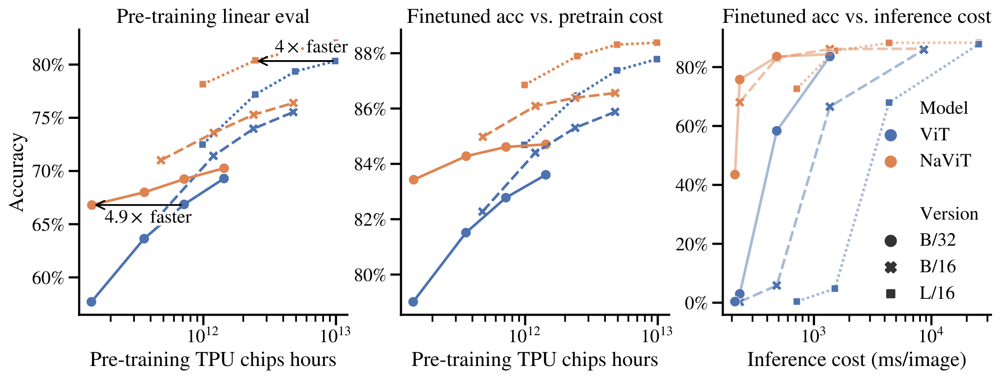
Source: Original NaViT v1 · author-provided figure PDFs; all panels, axes and legends retained. Click / Enter to zoom.
Figure 1 — 三张曲线分别证明什么
问题与读法。 从左到右分别看预训练后的 ImageNet 10-shot linear evaluation、微调后的 accuracy 对预训练预算、微调 accuracy 对推理成本。图内橙色为 NaViT，蓝色为 ViT；点形区分 B/32、B/16、L/16，连线并不代表连续采样的实测预算。
关键观察。 原文报告 NaViT 达到图中最高性能 ViT 的水平约只需 1/4 compute，最轻的配置约有 4.9× cost-effectiveness。中图表示预训练收益能传到微调，右图表示单个模型可跨分辨率选择性能与成本。Claim 边界。 “4× less compute” 是训练预算与最终精度的比较，既不是固定图片数下的 step latency 加速，也不是所有部署设备上的 4× 推理加速。正文明确把多看训练图片视为主要原因。
单位审计。 v1 的 Figure 1 / Table 2 将巨大数值标为 TPU chip hours / TPU Hours，右图推理轴与 Appendix C 的毫秒量级也不一致。本文保留图表，不自行猜测秒、毫秒或计时累计的换算；成本比值按原文报告，绝对设备时长优先引用附录的独立说明并注明设备。
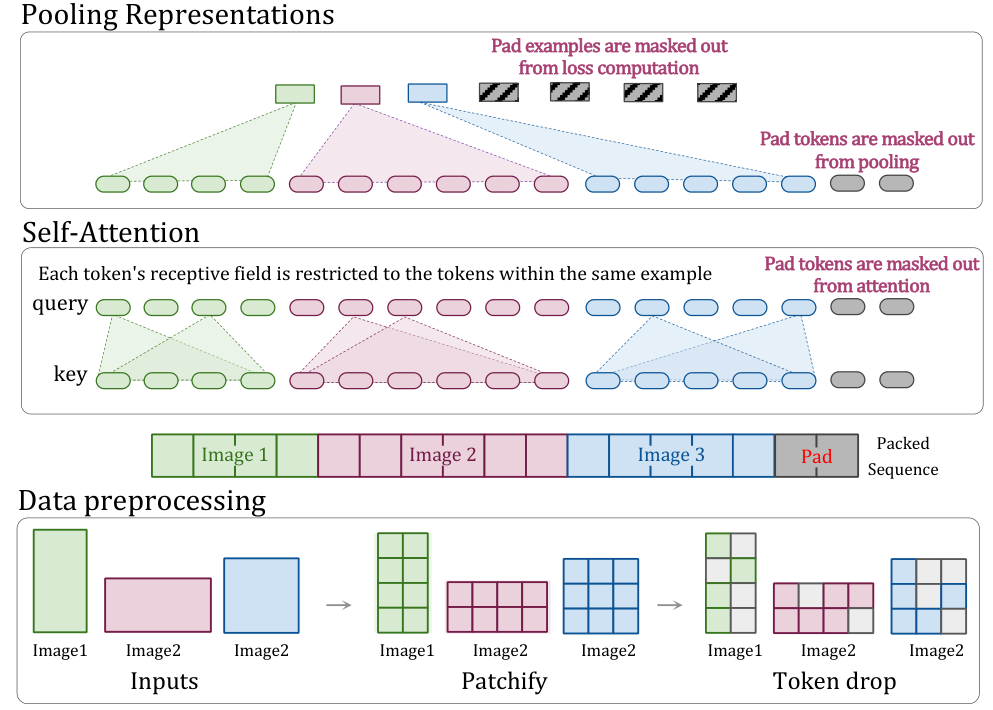
Source: Original NaViT v1 · author-provided figure PDFs; all panels, axes and legends retained. Click / Enter to zoom.
Figure 2 — 数据、attention、pooling 三层一起改变
阅读顺序。 自底向上：不同形状的输入 → patchify → token drop → 带 example ID 的 packed sequence → masked self-attention → masked pooling → 多个 example representations。绿色、粉色、蓝色各对应一张图片；灰色为容器剩余 padding。
模块与箭头。 每个 query 只读同一图片的 keys；padding 不参与有效图片的 attention。顶部一个容器输出多个 pooled vectors，padding example 不参加 loss。为什么重要。 只拼 token 会造成跨图泄漏；只加 attention mask 仍会让 pooling 混图；只改 pooling 仍会让 loss 把假样本当标签。该图讲的是一条端到端独立性契约，而不是一个孤立 mask。
Interpretation。 MLP、LayerNorm、残差等逐 token 操作可以保持原样。LayerNorm 的归一化轴是 hidden dimension，所以不同图片不会通过它互相混合；如果换成跨 token 或跨 batch 的统计运算，须重新审查这个前提。
§2 Method — 从输入到监督的完整重构
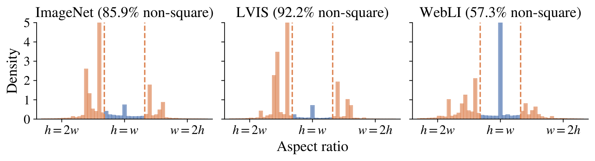
Source: Original NaViT v1 · author-provided figure PDFs; all panels, axes and legends retained. Click / Enter to zoom.
Figure 3 — 输入分布中的问题不是少数特例
依次看 ImageNet、LVIS、WebLI 的 height:width 密度分布与方形附近区域。图内按作者“偏离 square-ish 超过 20%”的规则统计：非方形占比分别为 85.9%、92.2%、57.3%。这些百分比是图中阈值下的统计，不应解释为“这些图片都会因为 square resize 失败”。它支持的是管线与数据天然形状不匹配；性能因果仍要靠后面的消融验证。
§2.1 Architectural changes — Tensor shape 与数据流
对第 i 张 RGB 图片，保持宽高比缩放到 Hᵢ×Wᵢ，patch 边长 P，网格为 hᵢ×wᵢ。实际实现必须处理边长为 P 倍数的取整，因而“保宽高比”在离散网格上可能有小幅近似失真。flatten 只改变排列，不改变 patch 的二维身份。
Copyable LaTeX
N_i=h_iw_i,\quad h_i=H_i/P,\quad w_i=W_i/P,\quad X_i\in\mathbb{R}^{N_i\times(3P^2)},\quad Z_i=X_iE,\quad E\in\mathbb{R}^{(3P^2)\times D}解释公式 T1。 Xᵢ 每行是一个 patch 的 RGB 像素，E 为共享线性投影，Zᵢ 是 [Nᵢ,D]。例如 128×256、P=16 的图片形成 8×16=128 个 tokens，每个原始 token 长 768；patch projection 将它变成 D 维。加入位置编码后，再按逐图 dropping 选择 Kᵢ≤Nᵢ 个 tokens。坐标必须取自未删除的原网格，而非重新给剩余 tokens 编号。
| 数据对象 | Shape | 必须携带的信息 |
|---|---|---|
| 单图 patch pixels | [Nᵢ,3P²] | 原始二维网格、RGB 顺序 |
| 保留的 patch tokens | [Kᵢ,D] | 原始 x/y 坐标、image ID |
| 容器输入 | [B,S,D] | 固定 B、S；每个位置的 example ID 与有效标记 |
| Self-attention mask | [B,1,S,S] 可广播到 heads | 同图可见，不同图隔离，padding 不能作为有效 key |
| 多图 pooling queries | [B,Emax,D] | 每个 query 对应一个 example slot |
| Pooling mask | [B,1,Emax,S] | 每个 slot 只读本图 tokens |
| Pooled image vectors | [B,Emax,D] | example slot 是否存在 |
| 监督目标 | [B,Emax,C] 或展平 [M,C] | padding image 不计 loss；M 为有效图片数 |
上表为 Interpretation：一致的实现契约。论文没有给出完整源码级 shape 表，Emax 和 B 的角色依据 §2.3 重构。
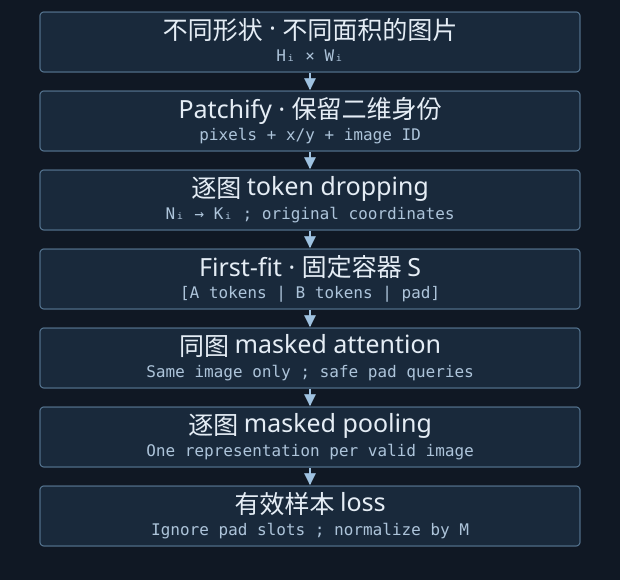
Masked self-attention：逻辑隔离不是 kernel 稀疏化
设 gₐ 为 token a 的 image ID，vₐ 表示有效 token，某一 attention head 的 Q、K、V 是 [S,dₕ]。
Copyable LaTeX
M_{ab}=\begin{cases}0&v_a\land v_b\land(g_a=g_b)\\-\infty&\text{otherwise}\end{cases},\qquad A=\mathrm{softmax}_{b}(QK^\top/\sqrt{d_h}+M),\qquad O=AV解释公式 T2。 同图块内做双向 attention，无 causal 约束；跨图和 pad 列的权重为零。如果 ID 排列为 A,A,B,B,pad，mask 是两个 2×2 对角块，而不是五个 tokens 的完整互相连接。Q/K normalization 是原文实验中额外采用的稳定训练技巧，此处展示的是标准缩放 attention 的结构表达，不能把该式当成作者逐行实现。
数值实现 caveat。 pad query 若整行都是 −∞，普通 softmax 会产生 NaN。实现可以让无效 query 使用安全的占位 key，再将输出置零，或调用明确定义全 masked 行行为的 kernel。有效 query 对 pad key 必须始终不可见。后续 pooling / loss 丢掉 padding，并不自动修复前面已传播的 NaN。
同一个容器，多张图片仍保持独立
输入每图保留的 token 数并选择容器长度，观察 first-fit 的结果。下方固定八 token 小例子展示同图 attention；pad query 整行不可见，实际实现须使用安全数值策略。
Attention mask：行是 query，列是 key
固定顺序 A,A,A,B,B,C,pad,pad；1 为可见，点为 masked。打包控制只改变上方容器，不改变这个独立的 mask 教学例子。
Masked pooling 与 loss：每张图片仍是一份样本
原文使用 attention pooling，而非把所有 tokens 简单平均。为每张图片设置一个 query，对本图 tokens 做 cross-attention；同一 learnable probe 可以在多个 example slots 间共享参数，slot 的 mask 区分输入。固定 B×Emax 个输出不等于固定这么多真实图片。
Copyable LaTeX
u_i=\mathrm{Pool}(Z,\ g=i),\qquad
\mathcal{L}_{\mathrm{sup}}=\frac{1}{M}\sum_{i:\,\mathrm{valid}(i)}\sum_{c=1}^{C}\mathrm{BCE}\!\left(y_{ic},\sigma(\ell_{ic})\right)解释公式 T3。 uᵢ 是 [D] 图像表示，分类 logits 是 [C]；监督使用 sigmoid cross-entropy，而不是要求 1000 类概率和为 1 的 softmax。M 是 batch 内真实图片数量。分布式实现须以全局有效样本数归一化，否则每个设备打包出的图片数量不同时会改变梯度权重。论文未完整披露这个实现细节，这里是工程检查项。
对 WebLI 对比训练，图像和文本各自打包，但最终用 example ID 重建图文一一对应。有效图文相似度矩阵是 [M,M]；padding 表示不能作为负样本参与 softmax normalization。文本不做随机 token dropping，默认最大长度 24。
Factorized & fractional positional embeddings
传统 learned 1D ViT 位置表按 flattened index 查找。同一 2D 位置在不同宽度的图片中对应不同 flattened index；二维表能解决坐标表达，却需要学习更多 (x,y) 组合。NaViT 将两个轴分开编码，再相加。
Copyable LaTeX
e_{x,y}=\phi_x(x)+\phi_y(y)\in\mathbb{R}^{D},\qquad
r_x=x/w_i,\quad r_y=y/h_i,\qquad
e^{\mathrm{frac}}_{x,y}=\phi_x(r_x)+\phi_y(r_y)解释公式 T4。 x、y 是零起始 patch column / row；wᵢ、hᵢ 是未 dropping 前的列数与行数。分母是 side-length，不是 wᵢ−1 / hᵢ−1。3×4 网格中的 row=1、col=2 对应 rᵧ=1/3、rₓ=1/2，而最后一列是 3/4。drop 后不能按剩余 tokens 的排名重算坐标。
absolute factorized 的参数量约为 2LD，joint 2D learned table 约为 L²D，L 是每轴最大索引容量；例如 L=64、D=768 时分别是 98,304 与 3,145,728 个参数。前者能组合已经见过的 x 与 y，但没有训练过的极端轴索引仍可能弱；factorization 并不等于无限 extrapolation。fractional coordinates 的区间与图片大小无关，帮助跨尺寸使用，但减弱绝对尺度与长宽比的直接表达。Appendix B 进一步比较 learned / fixed sinusoidal / parametric Fourier 等方案。
§2.2 Training changes — 分辨率和 token dropping 两个预算轴
Resolution sampling。 “有效分辨率 R”表示图片面积约为 R²，不表示长边或短边一定等于 R。在连续几何上，原图宽高比 a=W/H，对应 H′=R/√a、W′=R√a；再对齐 patch 网格。64×256 和 128×128 的面积相同，都能称为有效分辨率 128。
Copyable LaTeX
N_i\approx R_i^2/P^2,\qquad K_i\approx(1-d_i)N_i,\qquad
\mathbb{E}[R^2]_{\mathcal{U}(a,b)}=(a^2+ab+b^2)/3解释公式 T5。 dᵢ 为每图 token 丢弃比例。对 U(64,256)、P=16，忽略取整时 E[N]=112，若平均 d=0.5，则保留约 56 个 tokens；固定 224² 输入为 196 个。于是同样一个容器可以容纳更多训练图片。这个解析例子帮助理解吞吐来源，不是作者报告的最终平均图片数；图像形状、取整和实际 dropping 分布都会改变结果。
Continuous token dropping。 每张图片独立采样丢弃率，而非整个 batch 统一丢一半。这样同一 batch 同时包含细节少的便宜图与完整度高的图；丢弃分布也可随训练进程变化。它是删除 encoder 输入 tokens，和 Dropout 对 hidden activations 置零不是同一个操作；也不是 MAE 中用于重建的 masked patches。
§2.3 Efficiency — 算力、内存与固定形状的真实代价
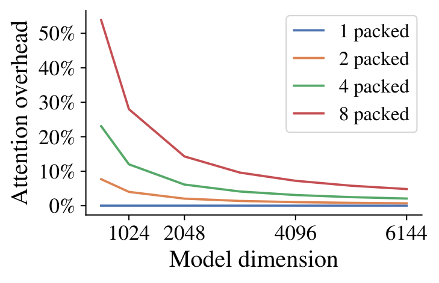
Source: Original NaViT v1 · author-provided figure PDFs; all panels, axes and legends retained. Click / Enter to zoom.
Figure 4 — 为什么大 hidden width 能摊薄 attention 开销
先固定每图 256 tokens，看 1/2/4/8 张图片被打包时，随 model dimension 增大的额外 attention overhead。MLP 和 QKV projection 按 D² 增长，attention 矩阵乘按 SD 增长；因此 D 越大，额外 attention 在总 FLOPs 中占比通常越小。1 packed 曲线为零额外开销，其余曲线随 D 增大下降。
Interpretation：逐算子成本。 在 MLP ratio=4、乘加计作 2 FLOPs、忽略 LayerNorm / softmax / biases / head 的标准 encoder 中：
Copyable LaTeX
F_{\mathrm{QKV+out}}=8SD^2,\quad
F_{\mathrm{QK^\top+AV}}=4S^2D,\quad
F_{\mathrm{MLP}}=16SD^2,\quad
F_{\mathrm{layer}}\approx24SD^2+4S^2D解释公式 T6。 QKV 三次 [S,D]×[D,D] 与一次输出投影合计 8SD²；QKᵀ 与 AV 合计 4S²D；两个 MLP GEMM（D→4D→D）合计 16SD²。Q/K normalization、activation、mask/softmax 的操作没有计入，训练反传与重计算也未计入。长序列不会改变权重参数，但会提高 activation / IO 压力。
打包 m 张、每张 n tokens，稠密实现计算 (mn)²，而真正有语义的块内计算是 mn²。和分开处理 m 张相比，纯 attention 部分增加约 m 倍；所有 token 的 projection / MLP 部分基本不变。相对于未打包总 FLOPs，额外开销是：
Copyable LaTeX
\mathrm{overhead}\approx\frac{(m-1)n}{6D+n},\qquad
\mathrm{AttentionMapBytes}=B\,H_{\mathrm{heads}}\,S^2\,b,\qquad
F_{\mathrm{blocks}}=4D\sum_iK_i^2解释公式 T7。 overhead 的基线是 m 个 n-token 图片各自做 encoder，B 是 packed sequence batch，b 是每个 attention 元素的 bytes。blocks 项只计算有语义的 attention GEMM；一个 block-aware / variable-length kernel 才可能接近它。FlashAttention 避免显式保存 S² attention map，但其稠密版本仍不必然省掉跨 example 的算力。实际速度还受 tile、dispatch、padding、编译和数据传输影响。
Mask 保持语义独立，dense kernel 仍有平方成本
调整固定 S、hidden width、layers、heads 和每图 tokens。比较主要 GEMM 与同图块的理论工作量；假定 MLP ratio=4、乘加=2 FLOPs。
不含 patch projection、pooling/head、softmax/LN、反传、重计算或完整峰值。Heads 只改变显式 map 估算；D 需能被 heads 整除。
Packing padding。 first-fit greedy 把当前图片放入第一个有足够余量的容器；无法完全填满时使用 pad。作者借助可控的分辨率分布与 S，通常使 pad tokens <2%。这个结果不是 first-fit 对任意图片分布的保证。
Emax 的代价。 一个容器最多预留 Emax 个 pooled outputs。设得太低会让超额图片无法进入有效 loss，即使 encoder 已算过；设得太高又会增加虚假 slots。对比 loss 的 O(M²) 时间与内存尤其敏感。作者使用 chunked contrastive loss：分块处理相似度并累计全局 softmax 的必要统计，降低物化矩阵和 gather 的压力，保持有效大 batch 的目标语义。它并没有把所有图文对的计算复杂度降为线性。
§3 Experiments — 主结果与消融逐项审计
Setup：主实验到底比较了什么
| 项目 | 分类预训练 | 图文对比预训练 |
|---|---|---|
| 数据 | JFT-4B，私有大规模监督图像数据 | WebLI |
| 模型 | B/32、B/16、L/16 | 图像 tower + 文本 tower，检测实验使用 L/14 |
| 参数量 | v1 未逐配置列出精确总参数；pooling、position、head 的变化不由旧 ViT 约数代填 | image/text tower 的完整参数账本未披露 |
| 训练总 tokens | Table 2 报告 steps、容器长度、平均图数与 images seen；dropping 下的完整有效 token 总数未直接给出 | 图像保留长度与文本截断长度不同，不能仅由图片数恢复 |
| Optimizer / precision | v1 引用前序训练 setup，未在本文完整重列 optimizer 状态与训练精度 | 附录称沿用分类优化 regime，改变 LR/decay；缺失字段不假设相同 |
| 目标 | sigmoid cross-entropy | 图文对比损失；分块计算以处理多 pooled slots |
| 表征评估 | frozen features 上 ImageNet 每类 10 张训练 linear classifier | ImageNet zero-shot、COCO retrieval |
| ViT 输入 | 典型 224×224；沿用其预处理 | 方形缩放 |
| NaViT 输入 | 默认无 inception crop、无强行 square resize，采样有效 R | 默认 U(64,Rmax)，保宽高比，无其他图像增强 |
| 共用训练技巧 | Q/K normalization、去 biases、attention pooling | 同类架构稳定性改进 |
| 实现与硬件边界 | JAX / Flax / Scenic；原文成本以 TPU 标记报告 | 本文未复现；精度、完整设备配置与 per-op profile 未全面披露 |
Baseline fairness。 主结果按模型配置与训练 compute 对齐，未要求两方看到同样多图片。预处理、输入信息量与有效图片 batch 也发生变化。不能把主结果归因于某一个结构改动；以下消融才区分 resolution、dropping 与 positional embedding。所有实验的 headline 指标来自 Paper，表中未披露字段不由本篇补造。
§3.1 Improved training efficiency and performance
同训练预算下，NaViT 曲线普遍优于 ViT。原文同时指出，保持 aspect ratio 和跨 resolution evaluation 有益，但“更多图片”是主要贡献。Table 2 的最后一组 L/16：ViT 约 4.0×10⁹ 张，NaViT 约 1.9×10¹⁰ 张，是 4.75×；B/16 同预算最高档为 4.5×；B/32 为 5.25×。这些是原表约数的重算，与每 sequence 的 4.88 等平均值不应强求精确相等。
审计结论。 相同模型尺度和报告预算下的整体训练方案收益得到支持；“每张图的表示学习效率一定提高 4×”没有得到支持。更强实验应同时提供同 pictures seen、同 retained tokens、同 wall time 和同 downstream preprocessing 的四种对照。
§3.2 Benefits of variable resolution
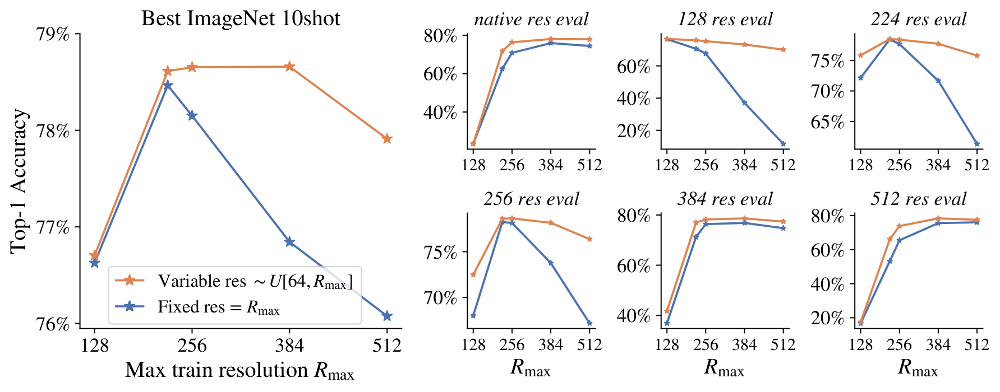
Source: Original NaViT v1 · author-provided figure PDFs; all panels, axes and legends retained. Click / Enter to zoom.
Figure 5 — 要同时看最高表现和每个测试分辨率
左图是给定 Rmax 时跨 evaluation resolutions 的最好 10-shot accuracy；右侧六张小图分别固定 native、128、224、256、384、512 等 evaluation。比较固定 R=Rmax 与 U(64,Rmax)，训练 FLOPs 相同。图中 variable-resolution 方案通常不低于 fixed，尤其能避免在大 Rmax 下为了高分辨率花费太多预算、减少样本数。
Why / Evidence。 小图高吞吐，大图提供细节和高分辨率 exposure，两者能在同一训练中共存。Caveat。 即使 fixed train/eval resolution 相同，variable 仍可匹配或超越，但这同时包含看到更多图片的效应；图不是 isolating resolution augmentation 的等样本数实验。
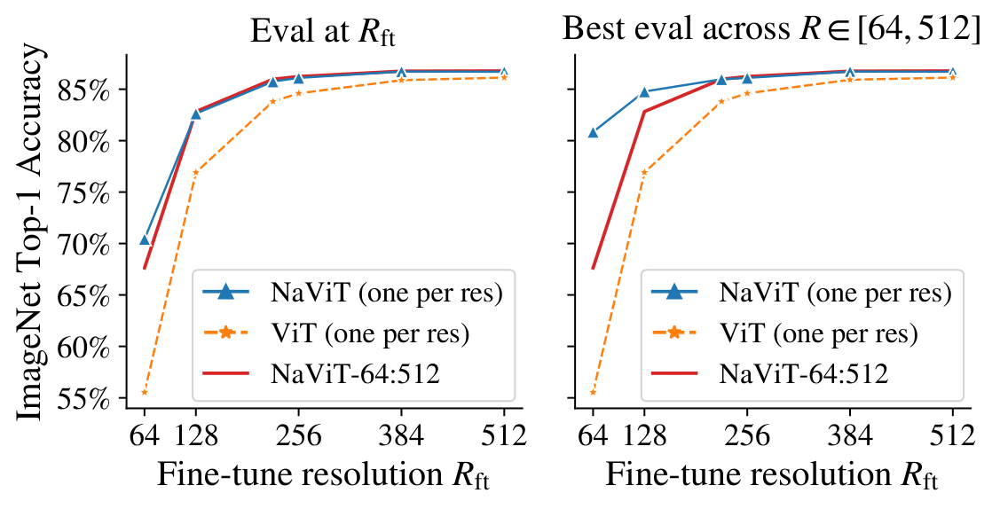
Source: Original NaViT v1 · author-provided figure PDFs; all panels, axes and legends retained. Click / Enter to zoom.
Figure 6 — 同一个 checkpoint 可以便宜适配
左图在各自微调的 Rft 上评估，右图取 R∈[64,512] 的最佳结果。蓝色为每个 resolution 单独微调的 NaViT，橙色为 ViT，红色为单个混合 resolution NaViT。红线接近多个蓝模型的效果；右图显示低分辨率微调之后，NaViT 仍能在高分辨率评估中利用更细图像。
Interpretation。 高分辨率表达能力已在预训练阶段获得，适配某个任务时不必只依靠昂贵高 resolution 来学习 head / task mapping。Caveat。 v1 文字和 caption 标为 B/16，TeX 引用文件名为 finetune_res_b32.pdf；另有 b16 文件且两者内容一致。本文按论文说明记录 B/16，并保留作者原始文件名，不通过文件名擅自更改实验配置。
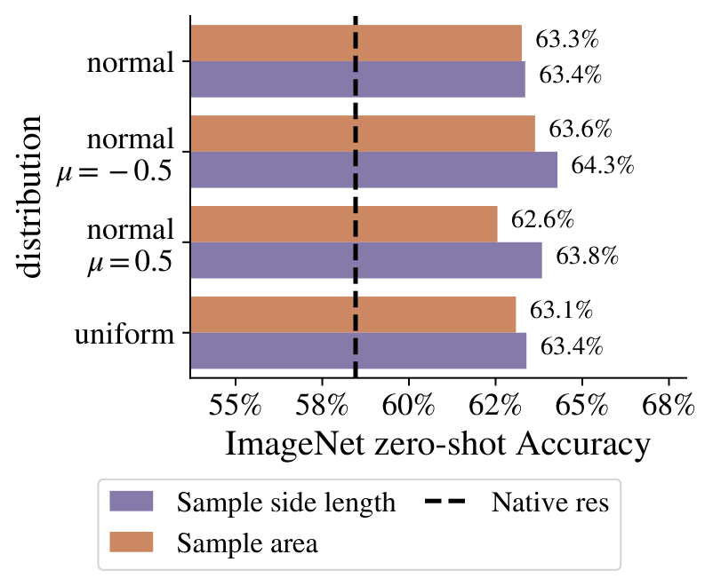
Source: Original NaViT v1 · author-provided figure PDFs; all panels, axes and legends retained. Click / Enter to zoom.
Figure 7 — 采样 side-length 与采样 area 的分布不同
图比较 uniform、truncated normal μ=0、μ=−0.5、μ=0.5，另用虚线表示 native resolution baseline。按原图 legend：紫色为 sample side length，橙色为 sample area；正文对颜色的文字描述与该 legend 相反，本文以实际图为准。
最好一项是偏小 side-length 的 truncated normal，图中 zero-shot accuracy 64.3%。同一分布下 side-length 的 64.3% 对 area 的 63.6%，差 +0.7 pp；这是图中两个数的重算。Side-length U(a,b) 的面积并不均匀：R² 的 density 随 area 增大而下降，因此偏向便宜图片。area uniform 则给大图更多权重。在固定预算下，更多样本与更多细节的取舍决定最优点。
§3.3 Benefits of variable token dropping
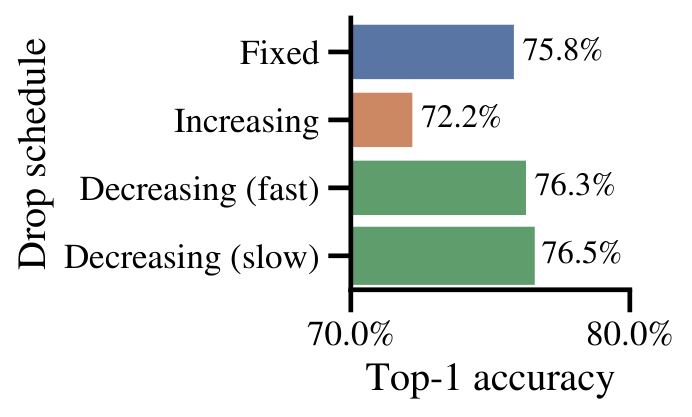
Source: Original NaViT v1 · author-provided figure PDFs; all panels, axes and legends retained. Click / Enter to zoom.
Figure 8 — 训练先多看、后看细的证据
四行是 fixed、increasing、decreasing fast、decreasing slow。原图 accuracy 分别 75.8%、72.2%、76.3%、76.5%。相对 fixed，慢速减少 dropping 提升 +0.7 pp，增加 dropping 降低 −3.6 pp。读数来自原图，不从未标点曲线插值得到。
Interpretation。 高 dropping 起步能先扩大样本 exposure；后期减少 dropping 使模型更多处理细节、接近完整输入。这个解释符合曲线，但没有独立测量“先学全局、后学局部”的内部表示因果。
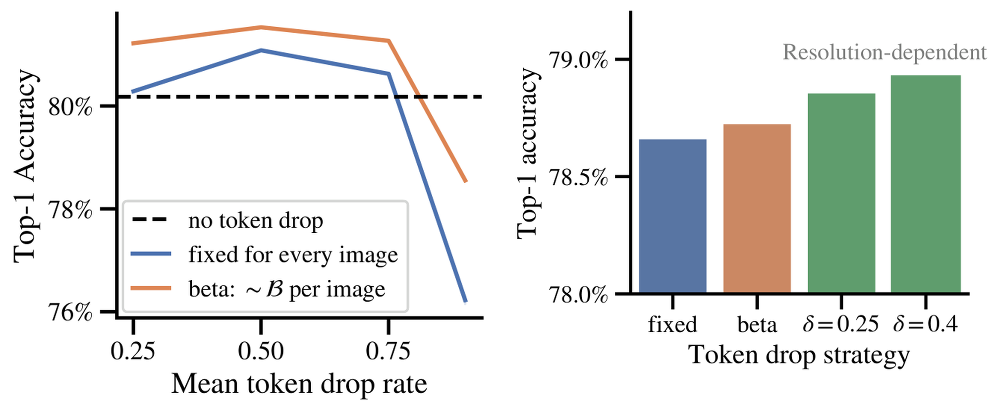
Source: Original NaViT v1 · author-provided figure PDFs; all panels, axes and legends retained. Click / Enter to zoom.
Figure 9 — 同样平均丢弃率，分布也会影响效果
(a) 对比每图相同 drop rate、每图 Beta 随机 rate 与 no-drop 基线；(b) 对比 fixed、Beta 和 resolution-dependent 方案。相同平均值不等于相同训练体验：变动 rate 能保留部分完整图；对大 resolution 使用较高 dropping 能摊平 per-image 计算量。图支持这里的实验范围内改进，不能推导“随机丢得越多越好”，尤其接近 0.75 后效果明显下降。
先多看图片，再保留更多细节
切换 increasing / decreasing / fixed，调整 sigmoid 拐点和速度。每张图片的分辨率保持不变，只显示 dropping 均值；横轴为累计图片数。
§3.4 Positional embeddings
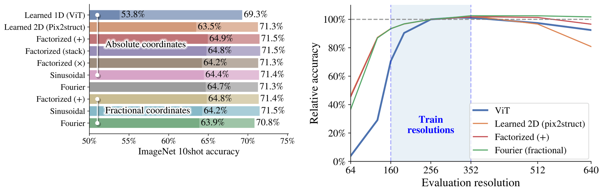
Source: Original NaViT v1 · author-provided figure PDFs; all panels, axes and legends retained. Click / Enter to zoom.
Figure 10 — 最好精度与外推能力不是同一个问题
(a) 浅色表示跨 resolutions 的最好 accuracy，深色为平均；(b) 把 accuracy 以 R=256 归一化，比较 training resolution [160,352] 外的表现。learned 1D ViT 需要常规 interpolation；joint 2D Pix2Struct 在未见的坐标组合上更脆弱；factorized 方案总体更稳定，sum 是作者选择的组合。
具体读数。 Figure 10a 中 factorized absolute (+) 的平均 64.9%、最佳 71.5%，learned 1D 为 53.8%、69.3%，joint 2D 为 63.5%、71.3%；与 ViT 最佳差仅 +2.2 pp，但跨 resolutions 平均差 +11.1 pp。把“平均稳定性”写成“标准 ImageNet 精度提升 11.1 点”会误读指标。
实验条件。 NaViT-B/16 训练 200k steps，R∼U(160,352)；ViT-B/16 固定 256，同 images seen，在新 resolution 上插值位置表。这个消融采用等图片数，与主实验的等 compute 条件不同。它支持 position scheme 对跨网格适配的影响，不构成无限分辨率泛化证明。
§3.5 Other aspects of performance
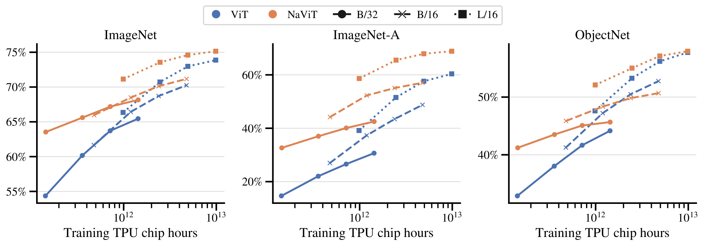
Source: Original NaViT v1 · author-provided figure PDFs; all panels, axes and legends retained. Click / Enter to zoom.
Figure 11 — OOD 收益依赖评估管线
三个 panel 对 ImageNet、ImageNet-A、ObjectNet，训练预算对齐；图内红色 NaViT，蓝色 ViT。NaViT 在 ImageNet-A 上差距显著，ObjectNet 在大预算下接近。两者都含极端宽高比图片，却不一定呈现同一收益，因为保宽高比中心 crop 对 ObjectNet 有较强先验作用，对 ImageNet-A 可能损伤边缘信息。
数据完整保留在 Table 5。最高 L/16 的 custom 策略：ImageNet-A 60.4→68.9，+8.5 pp；ObjectNet 57.7→57.9，+0.2 pp。不是所有 OOD 都显著提升。无 crop 的 resize 策略见 Appendix F。
Calibration。 正文称 128–1024 patches 的 ECE 稳定在 (0.045,0.047)，但 Table 4 明确包含 0.048（384 tokens）。正确的原表范围是 0.045–0.048。稳定性结论仍大致成立，但不能删除最大值。
Inference trade-off。 本节将预算定义为 Cloud TPUv3 chip 的 latency，Appendix C/D 拆解 token 数与 cascade。推理预算是模型调用的设备时间，不等于移动端的预处理、上传、encoder、merger、LLM prefill 和生成全链路 latency。
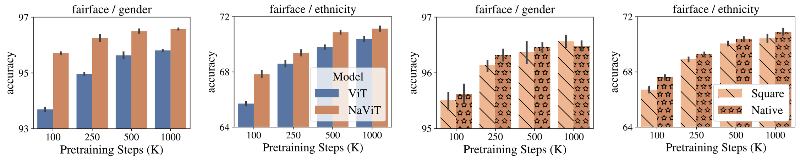
Source: Original NaViT v1 · author-provided figure PDFs; all panels, axes and legends retained. Click / Enter to zoom.
Figure 12 — 注释质量提升不等于公平性已被解决
左两图：FairFace gender / ethnicity 的 linear probe，NaViT-L/16 对 ViT-L/16；右两图：NaViT 用 native aspect ratio 对 square resize。横轴 pretraining steps，纵轴 annotation accuracy。左侧报告 Wilcoxon signed-rank test p=3×10⁻⁴；右侧 inception-style crop、最小 area 50% 后的比较报告 p=0.02。
意义。 较好的表征和较少输入形变可以降低这些数据集的标签预测错误。限制。 Aggregate annotation accuracy 不是 group-wise calibration、equalized odds 或身份定义正确性的证明；统计显著不等于所有群体有同等效果。Appendix G 保留作者对分类失真与使用边界的讨论。
§3.6 Other downstream tasks
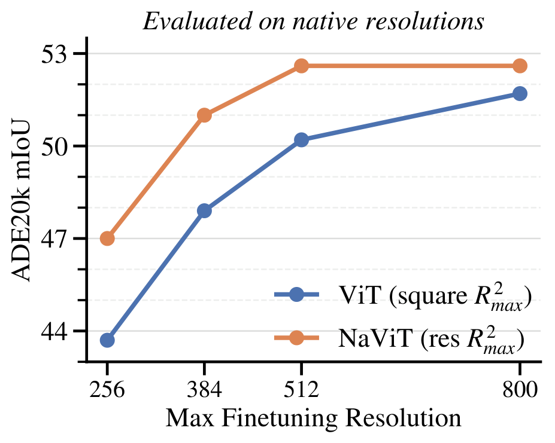
Source: Original NaViT v1 · author-provided figure PDFs; all panels, axes and legends retained. Click / Enter to zoom.
Figure 13 — 分割中的输入几何需要一致恢复
横轴 maximum fine-tuning resolution，纵轴 ADE20k mIoU。ViT-L/16 用 square crop，NaViT-L/16 用保宽高比、总面积 Rmax² 的输入，linear decoder 遵循 Segmenter。比较时预训练 compute 相近，微调面积对齐。NaViT 的曲线在各 Rmax 更高；原文称 R384 的 NaViT 超过 R512 ViT、约两倍快。
解释。 两方都在 native resolution 下评估标签，ViT 的 square prediction 需要映回原图几何。面积相同并不代表几何变换完全一样。mIoU 是各类别 IoU 的平均；分割收益不能只解释为 ImageNet 分类头更强。原文未给足以在此页独立复算“2×快”的全部 timing 条件，保留为作者报告。
Table 1 — NaViT improvements carry over to object detection.
| Metric ↑ | ViT-L/14 | NaViT-L/14 |
|---|---|---|
| ImageNet zeroshot | 68.3% | 72.9% |
| LVIS AP | 23.3% | 28.3% |
| LVIS AP rare | 17.2% | 24.3% |
Source: Original NaViT v1 · Table 1.
Original PDF table · typography and grouped headers
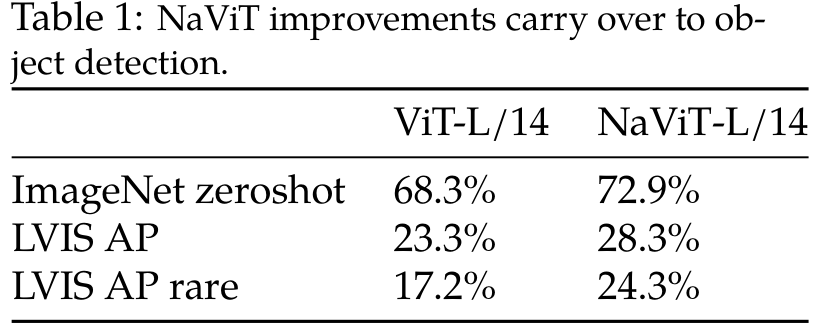
Table 1 — 检测迁移的收益逐项重算
对比 compute-matched ViT / NaViT L/14，经 OWL-ViT 协议得到 LVIS 结果。ImageNet zero-shot +4.6 pp，LVIS AP +5.0 pp（约 +21.5% 相对），rare AP +7.1 pp（约 +41.3% 相对）。rare 类收益较大，支持细粒度表征迁移；因为预训练短于原始 OWL-ViT，这里的绝对指标低于其完整配置，不能当作当时整个 LVIS 排行榜冠军。
Video classification。 用三种 spatio-temporal tubelets，增加 temporal positional embedding，并用 central frame embedding 初始化原图像 kernel。NaViT-L 在 Kinetics400 上得到与 ViViT-L 80.4% 相近的表现，约少 6× epochs，且不做 multi-crop eval。原文这里的 80.4% 是 ViViT-L 的参照值，未提供 NaViT 的独立精确值，不能补写为 NaViT 的实测 80.4%。作者也注明数据量少于先前工作，因此 epochs 与总训练 compute 不完全等价。
§4 Related work — 原论文的四条技术关系
Flexible ViTs。 FlexiViT 的主要可调轴是 patch size，重采样 embedding kernel 来使用同一组权重；Pix2Struct 则处理保宽高比的可变网格，预训练目标偏向截图 / 文档视觉语言理解。NaViT 强调多图 packing，让 per-image resolution 可以在同一个固定 batch shape 内变化。
Multiscale ViTs。 Swin、MViT 等在网络内部建立多尺度表示，服务局部与全局建模；NaViT 自身没有多层级 feature pyramid。输入多 resolution 与模型内部 multiscale 不是同一个设计点，两者可以结合。
Mixed-resolution training。 低分辨率预训练、高分辨率末段适配是常见路线，FixRes 和 PaLI 等体现了这种策略。NaViT 让不同 resolution 持续混合，从而减少必须在某个高 resolution 上单向锁定的倾向。原文对高 resolution adaptation“不可逆”的说法是相对通常训练管线的经验描述，不是数学不可逆。
Multigrid 与上述训练路线。 原文特别将 video multigrid training 视为最接近的工作：早期使用较粗的时空网格和较大 batch，后期使用更细网格，并配合层级采样日程与学习率缩放。Patch n’ Pack 则可在同一个固定容器中持续混合图片预算，减少必须依赖复杂跨阶段 shape 日程的约束；它没有证明 multigrid 的所有调度策略都失去价值。
Token dropping。 原文第四组关系从随机移除 patch，延伸到结构化 dropping、importance-based selection、token merging 和 adaptive ViT。它们改变“保留哪些信息”，packing 改变“变长结果怎样批量计算”，两者可组合。MAE 的重建目标、ToMe 的融合操作和本论文删除 encoder 输入 tokens 的监督方案仍应分别理解；论文没有在同一实验里完成所有这些策略的对照。
§5 Conclusions and future work
原论文结论是：Patch n’ Pack 改善视觉 Transformer 训练效率，使单个模型跨 resolution 使用、以更低成本适配，并释放 adaptive computation 等研究空间。本文将它的贡献理解为数据形状与计算形状的解耦。支撑最强的是完整训练方案的 budget-quality 改善；更细的 causal attribution、公共数据复现与端侧 latency 仍需要新的实验。
Appendix A — Training details
A.1 Classification pretraining
学习率使用 reciprocal square-root schedule，包含 linear warmup / cooldown，峰值 8×10⁻⁴；body weight decay 0.03，head 3.0。ViT 训练 224²；主 NaViT 采样 R∈[64,256] 的均匀分布。作者以此控制 token 长度、提高图像 exposure，而不是所有图片都按原始像素大小直接进入。
Table 2 — Pre-training details of ViT and NaViT with supervised classification.
| Name | TPU Hours (original label) | Train Steps | Cooldown Steps | Sequence Length | Images Per Seq. | Batch Size | Training Images |
|---|---|---|---|---|---|---|---|
| ViT-B/32 | 1.4 × 10^11 | 1.0 × 10^5 | 1.0 × 10^4 | 49 | 1.0 | ≈ 4.0 × 10^3 | 4.0 × 10^8 |
| ViT-B/32 | 3.5 × 10^11 | 2.5 × 10^5 | 5.0 × 10^4 | 49 | 1.0 | ≈ 4.0 × 10^3 | 1.0 × 10^9 |
| ViT-B/32 | 7.1 × 10^11 | 5.0 × 10^5 | 1.0 × 10^5 | 49 | 1.0 | ≈ 4.0 × 10^3 | 2.0 × 10^9 |
| ViT-B/32 | 1.4 × 10^12 | 1.0 × 10^6 | 1.0 × 10^5 | 49 | 1.0 | ≈ 4.0 × 10^3 | 4.0 × 10^9 |
| ViT-B/16 | 4.7 × 10^11 | 1.0 × 10^5 | 1.0 × 10^4 | 196 | 1.0 | ≈ 4.0 × 10^3 | 4.0 × 10^8 |
| ViT-B/16 | 1.1 × 10^12 | 2.5 × 10^5 | 5.0 × 10^4 | 196 | 1.0 | ≈ 4.0 × 10^3 | 1.0 × 10^9 |
| ViT-B/16 | 2.3 × 10^12 | 5.0 × 10^5 | 1.0 × 10^5 | 196 | 1.0 | ≈ 4.0 × 10^3 | 2.0 × 10^9 |
| ViT-B/16 | 4.7 × 10^12 | 1.0 × 10^6 | 1.0 × 10^5 | 196 | 1.0 | ≈ 4.0 × 10^3 | 4.0 × 10^9 |
| ViT-L/16 | 9.8 × 10^11 | 1.0 × 10^5 | 1.0 × 10^4 | 196 | 1.0 | ≈ 4.0 × 10^3 | 4.0 × 10^8 |
| ViT-L/16 | 2.4 × 10^12 | 2.5 × 10^5 | 5.0 × 10^4 | 196 | 1.0 | ≈ 4.0 × 10^3 | 1.0 × 10^9 |
| ViT-L/16 | 4.9 × 10^12 | 5.0 × 10^5 | 1.0 × 10^5 | 196 | 1.0 | ≈ 4.0 × 10^3 | 2.0 × 10^9 |
| ViT-L/16 | 9.8 × 10^12 | 1.0 × 10^6 | 1.0 × 10^5 | 196 | 1.0 | ≈ 4.0 × 10^3 | 4.0 × 10^9 |
| NaViT-B/32 | 1.4 × 10^11 | 9.8 × 10^4 | 1.0 × 10^4 | 64 | 5.41 | ≈ 2.2 × 10^4 | 2.1 × 10^9 |
| NaViT-B/32 | 3.5 × 10^11 | 2.4 × 10^5 | 5.0 × 10^4 | 64 | 5.41 | ≈ 2.2 × 10^4 | 5.3 × 10^9 |
| NaViT-B/32 | 7.1 × 10^11 | 4.8 × 10^5 | 1.0 × 10^5 | 64 | 5.41 | ≈ 2.2 × 10^4 | 1.0 × 10^10 |
| NaViT-B/32 | 1.4 × 10^12 | 9.7 × 10^5 | 1.0 × 10^5 | 64 | 5.41 | ≈ 2.2 × 10^4 | 2.1 × 10^10 |
| NaViT-B/16 | 4.7 × 10^11 | 9.3 × 10^4 | 1.0 × 10^4 | 256 | 4.87 | ≈ 1.9 × 10^4 | 1.8 × 10^9 |
| NaViT-B/16 | 1.1 × 10^12 | 2.3 × 10^5 | 5.0 × 10^4 | 256 | 4.88 | ≈ 1.9 × 10^4 | 4.6 × 10^9 |
| NaViT-B/16 | 2.3 × 10^12 | 4.6 × 10^5 | 1.0 × 10^5 | 256 | 4.88 | ≈ 1.9 × 10^4 | 9.2 × 10^9 |
| NaViT-B/16 | 4.7 × 10^12 | 9.2 × 10^5 | 1.0 × 10^5 | 256 | 4.88 | ≈ 1.9 × 10^4 | 1.8 × 10^10 |
| NaViT-L/16 | 9.8 × 10^11 | 9.7 × 10^4 | 1.0 × 10^4 | 256 | 4.88 | ≈ 1.9 × 10^4 | 1.9 × 10^9 |
| NaViT-L/16 | 2.4 × 10^12 | 2.4 × 10^5 | 5.0 × 10^4 | 256 | 4.87 | ≈ 1.9 × 10^4 | 4.8 × 10^9 |
| NaViT-L/16 | 4.9 × 10^12 | 4.8 × 10^5 | 1.0 × 10^5 | 256 | 4.87 | ≈ 1.9 × 10^4 | 9.6 × 10^9 |
| NaViT-L/16 | 9.8 × 10^12 | 9.6 × 10^5 | 1.0 × 10^5 | 256 | 4.88 | ≈ 1.9 × 10^4 | 1.9 × 10^10 |
Source: Original NaViT v1 · Table 2. Original multirow names repeated for accessibility; all 24 rows retained. Original TPU Hours label and values retained despite the apparent unit inconsistency. Batch size refers to images; sequence batch is about 4k.
Original PDF table · typography and grouped headers
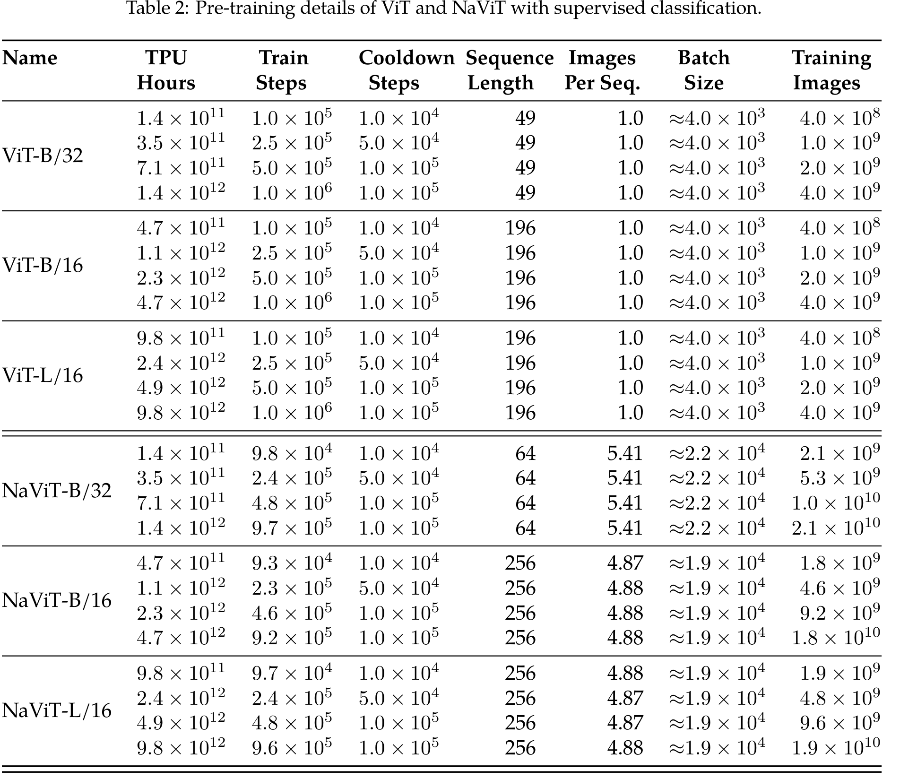
Table 2 — 容器 batch、图片 batch、训练步数分别读
原表共 24 行，含 6 个模型家族、各 4 档训练预算；名称的 multirow 在网页中重复以方便检索，其余数值与顺序完整保留。ViT 每 sequence 一张图片；NaViT-B/32 的 sequence length 64、平均 5.41 图；NaViT-B/16 与 L/16 的 length 256、平均约 4.87–4.88 图。sequence batch 约 4k，图片 batch 因此能到 19k / 22k。
重算。 L/16 最大预算：steps 1.0×10⁶ 对 9.6×10⁵，images 4.0×10⁹ 对 1.9×10¹⁰。NaViT 并没有多训练 5× steps，而是每步处理了更多图片。B/32 NaViT 的 2.1×10¹⁰ / ViT 4.0×10⁹=5.25；模型间不能用相同 pack length，因为 patch size 改变每图 token 数。
单位 caveat。 “TPU Hours”列的 10¹¹–10¹³ 数值与通常 chip-hours 量级明显不相容，Figure 1 同样如此；作者源表未说明其他换算单位。表中保留原始标记，并避免将这些数字换成可用于估算训练费用的小时数。该列的配对数值可用于理解论文自己的 compute matching，但绝对时间不可可靠复用。
A.2 Contrastive pretraining
T5 SentencePiece tokenizer 词表 32,000；text max length=24，不丢 text tokens。学习率 3×10⁻³；所有 kernels 的 weight decay 1×10⁻⁶，projection heads 不另设 head decay。图像 side-length 默认 U(64,Rmax)，没有其他 image augmentation。固定文本上限是截断而非宣称所有原文本都短于 24。
A.3 Packing algorithm
使用 first-fit greedy：每张图片加入第一个有足够剩余 tokens 的序列，没有可用容器时开新容器，最后补 pad。本文交互使用同一规则，但有限示例不会重现作者全数据集 <2% pad 统计。对极端长图，应先限制 per-image token 数，使单图能放入容器；任意拆图会影响其 global attention，须明确改变了模型语义。
A.4 Sampling token dropping rates
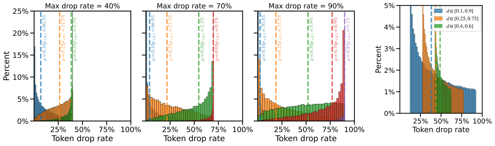
Source: Original NaViT v1 · author-provided figure PDFs; all panels, axes and legends retained. Click / Enter to zoom.
Figure 14 — 两类 rate 分布的含义
(a) 展示 mean 与 dmax 控制的 Beta dropping 分布；(b) 展示随输入 sequence length 增大的 dropping rate。原文 Figure 14 只有两段 subcaptions，没有共享主 caption，本页保留这种事实，panel 来自作者 PDF，图形未重画。
Beta 参数重构。 令 u=d/dmax，均值 q=dμ/dmax，作者默认 variance v=0.3q(1−q)。Beta 的 α+β=q(1−q)/v−1=7/3，所以 α=(7/3)q、β=(7/3)(1−q)。例如 dμ=0.5、dmax=0.9，q≈0.556，α≈1.296、β≈1.037。这是根据作者定义计算的参数，不是新实验。
Resolution-dependent。 d 从均值 μ(s) 随 sequence length 线性增长的 truncated normal 抽取，文中第二参数为 0.02，并在均值两侧两个标准差之外拒绝采样。原文记号没有明确把 0.02 写为 variance 还是 standard deviation；本篇不据此构造精确随机复现。μ(smin)=dmin、μ(smax)=dmax。正文概述写“随 R”，附录明确按 sequence length s，本页可调机制按附录 s 的定义。
A.5 Scheduling token dropping rates
Copyable LaTeX
\rho(n;\rho_{\min},\rho_{\max},\mu,\tau)=\rho_{\min}+(\rho_{\max}-\rho_{\min})\cdot\sigma\left(\frac{n-\mu}{\tau}\right)原始 Equation (1)。 n 为累计处理的图片数，ρmin=0.2、ρmax=0.8；μ 控制拐点，τ 控制变化速度和方向。τ>0 是由低 dropping 向高 dropping 增加；τ<0 反向变化。n=μ 时 rate=0.5，符号一旦写反，就会把有效的 decreasing 方案实现成论文中效果较差的 increasing 方案。公式用 image count 而非 optimizer step；打包吞吐变化时两者的时间坐标不同。
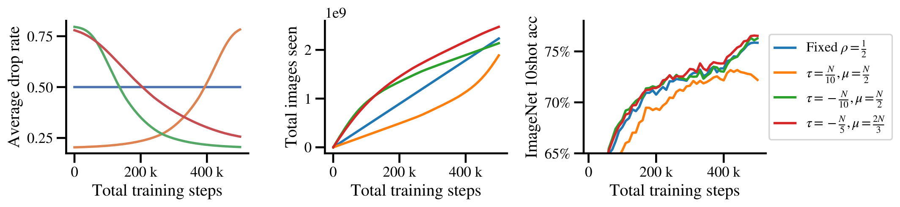
Source: Original NaViT v1 · author-provided figure PDFs; all panels, axes and legends retained. Click / Enter to zoom.
Figure 15 — step 与 examples seen 必须分开
三 panel 从左到右为 dropping schedule、累计训练图片数、10-shot accuracy 对 training steps。早期高 dropping 的曲线能更快积累 examples，后期减少 dropping 提高信息完整度。这里 N 是固定 ρ=1/2 的基线最终训练图数，不是 token 数；与 Equation (1) 的累计 image count 联系后，才能理解不同 curves 的预算匹配。
Appendix B — Model information
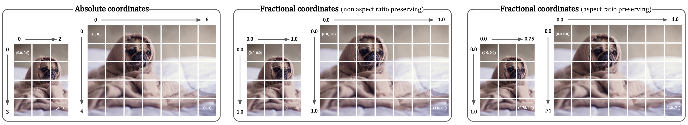
Source: Original NaViT v1 · author-provided figure PDFs; all panels, axes and legends retained. Click / Enter to zoom.
Figure 16 — 删除 patch 后也不能失去原始几何
作者用同一图像的 96×128 与 224×160 两个 view，P=32，对比 absolute 与 fractional 坐标；这是两个 view，不应理解为纯等比例 resize 的同一网格。absolute 表达轴索引，fractional 表达在当前图像轴长度中的相对位置。fractional 的归一化要基于各自完整 view 的 rows/cols，而不是 packed sequence S，也不是 retained K。
Table 3 — Classification of positional embedding experiments from Figure 10a.
| Name | Coordinates | Type | Factorized |
|---|---|---|---|
| Learned 1D (ViT) | Absolute | Learned | No, position in flatted token sequence |
| Learned 2D (Pix2struct) | Absolute | Learned | No |
| Factorized abs. (+) | Absolute | Learned | Yes, sum |
| Factorized abs. (stack) | Absolute | Learned | Yes, stack |
| Factorized abs. (×) | Absolute | Learned | Yes, product |
| Fourier abs. | Absolute | Parametric | No |
| Sinusoidal abs. | Absolute | Fixed | Yes, stack |
| Factorized frac. (+) | Fractional | Learned | Yes, sum |
| Fourier frac. | Fractional | Parametric | No |
| Sinusoidal frac. | Fractional | Fixed | Yes, stack |
Source: Original NaViT v1 · Table 3. In sinusoidal and factorised embeddings experiments with fractional coordinates, fractional coordinate embeddings were obtained from absolute coordinate embeddings via bilinear interpolation.
Original PDF table · typography and grouped headers
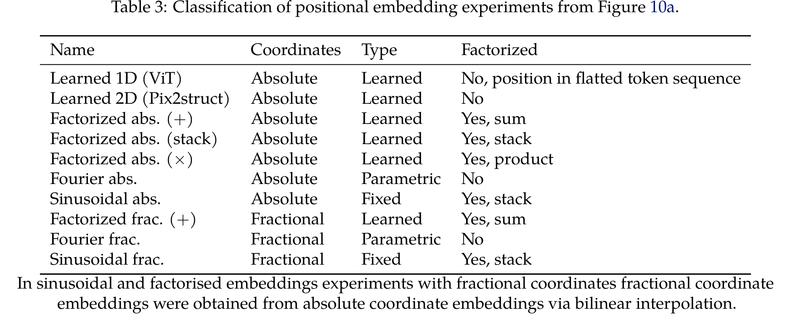
Table 3 — 三个设计轴不要混为一谈
表列明 coordinates（absolute/fractional）、type（learned/parametric/fixed）与 factorized（sum/stack/product/joint）。Fourier 在这个实验分类中是 parametric、non-factorized；sinusoidal 为 fixed、factorized stack。fractional learned 和 sinusoidal 通过 bilinear interpolation 得到 fractional coordinate embedding。工程解释。 换 coordinates、换函数族、换组合方式分别改变表达能力与外推，不能只用“二维位置编码”概括这十个方案。
Appendix C — Inference strategies
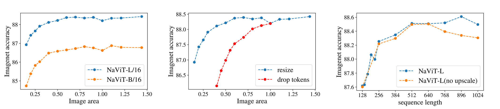
Source: Original NaViT v1 · author-provided figure PDFs; all panels, axes and legends retained. Click / Enter to zoom.
Figure 17 — resize 与随机 dropping 的信息损失不等价
(a) 横轴为相对 native area，作者观察 ImageNet 约缩到 40% area 仍保留大部分质量，再小会陡降；(b) 比较 resize 与随机丢 tokens，前者明显更有效；(c) 比较允许 upscaling 与不 upscaling。
Interpretation。 resize 将整体图像信息压到较少 tokens，随机 dropping 会移除部分局部内容和空间覆盖。训练随机丢弃帮助 regularization / throughput，但推理没有其带来的“多看样本”的收益。40% 是对该数据集的观察，不能套到不同 native size 的扫描文档。Upscale 不会创造真实细节；在 token budget 允许时，它可能改善模型输入尺度与训练分布的匹配。
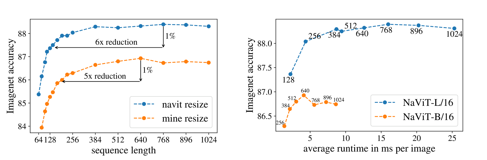
Source: Original NaViT v1 · author-provided figure PDFs; all panels, axes and legends retained. Click / Enter to zoom.
Figure 18 — 同 token 数与同设备时间给出两种选择
(a) token 数与 ImageNet accuracy：256 tokens（P=16，对应约 256² area）在作者模型上距离 native 约 0.3 pp；128 tokens（约 181² area）约差 1 pp。(b) latency-accuracy 曲线，L/16 的 128 tokens 与 B/16 的 512 tokens 速度接近，但 L/16 accuracy 高近 1 pp。
意义。 小模型+更多 pixels 并不总比大模型+更少 pixels 好；应一起选择 D、depth、S。设备边界。 本文保留原始曲线，按正文记为 Cloud TPUv3 chip 的测量，不当作 Snapdragon HTP latency。文章中没有足以拆出 resize、packing 或 RPC 的 per-op profiler 数据。
Appendix D — Cascades
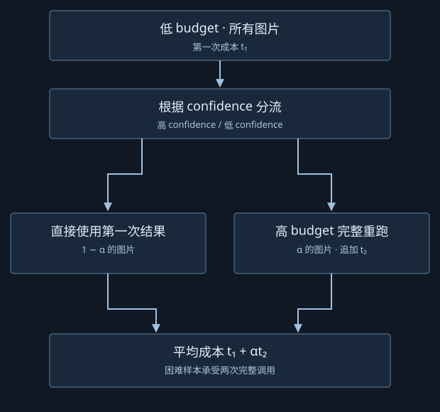
Copyable LaTeX
\bar{t}=t_1+\alpha t_2,\qquad
\mathrm{Acc}=(1-\alpha)\mathrm{Acc}_{1,\mathrm{easy}}+\alpha\,\mathrm{Acc}_{2,\mathrm{hard}}解释公式 T8。 所有图片先跑低 token budget，再按低 max probability 选出 α 比例的困难图，用更高 budget 重新跑。t₂ 是第二次完整调用的成本，所以平均代价包含第一次已花的 t₁，不能写成 (1−α)t₁+αt₂。hard 子集的 accuracy 不能用第二模型的 overall accuracy 代替；置信度排序是否可靠决定实际收益。
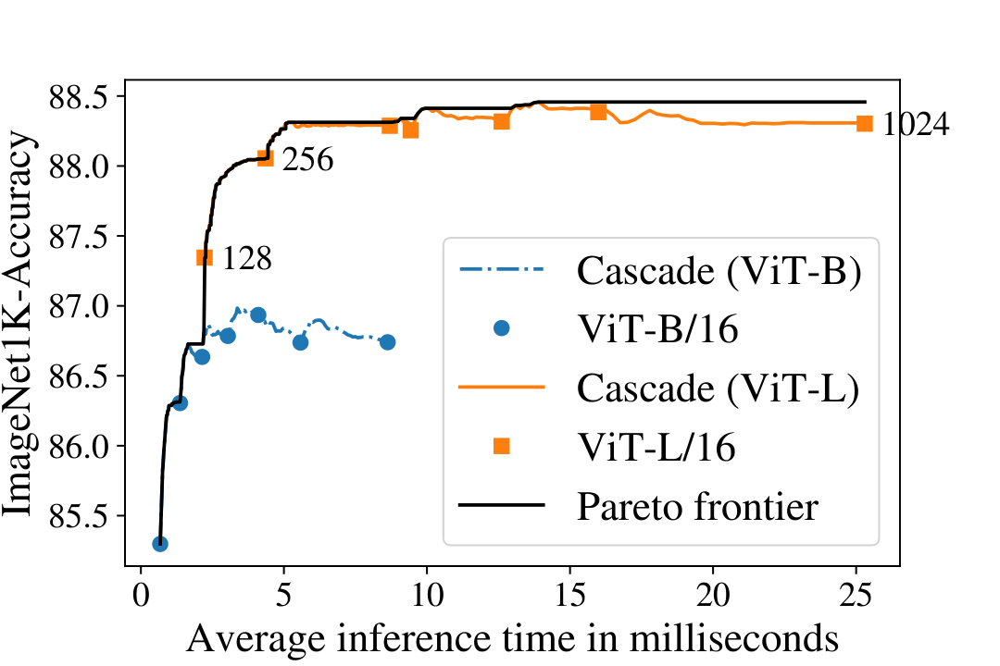
Source: Original NaViT v1 · author-provided figure PDFs; all panels, axes and legends retained. Click / Enter to zoom.
Figure 19 — Pareto 改善以平均工作量为前提
横轴是平均 inference time、纵轴 accuracy；蓝 / 橙 cascade 曲线对应 B / L，黑线为展示的 Pareto frontier，选定点标注 tokens。部分样本用小预算即可正确，少数样本追加计算，使 α 成为连续可调参数。
Caveat。 论文强调 bulk inference 的 amortized time。单请求的 tail latency 可高于一次大 budget 调用；设备队列、两次 resize / transfer、host 回调和 batch 不齐都会影响端侧收益。置信度稳定的 ECE 只是有用线索，不保证 low-confidence 排序就是最值得追加计算的样本。
Appendix E — Calibration
Table 4 — Expected calibration error on ImageNet-1K with varying sequence lengths.
| Sequence Length | 128 | 256 | 384 | 512 | 640 | 768 | 1024 |
|---|---|---|---|---|---|---|---|
| Calibration Error ↓ | 0.047 | 0.046 | 0.048 | 0.047 | 0.047 | 0.046 | 0.045 |
Source: Original NaViT v1 · Table 4.
Original PDF table · typography and grouped headers
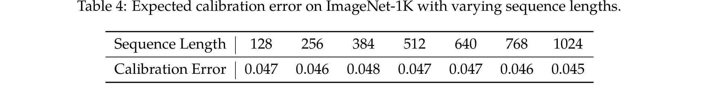
Table 4 — ECE 稳定，但不是“每张图 confidence 都准确”
ImageNet-finetuned B model，1000 个独立 sigmoid outputs，top-1、ℓ₁ ECE、30 buckets；L model 作者称行为相似。七个 sequence lengths 全保留：128、256、384、512、640、768、1024。ECE 从 0.045 到 0.048，最大最小差 0.003。
校准衡量按置信度分箱后的准确率与 confidence 差；它不等于 classification error，也不是每个群体各自的 calibration。对 cascade 而言，仍需在目标数据和每个 budget 上检查 selective risk / coverage，尤其在 OOD 或量化后。该检查是本篇建议，不是论文完成的实验。
Appendix F — Out of distribution evaluation
ViT 的 custom/crop 策略：ImageNet-A / ObjectNet 取保宽高比中心 75% crop；其他数据 square resize 后中心 87.5% crop。NaViT 的 crop 与 resize 都在最终尺寸上保宽高比。resize 策略完全不 crop。两组实验应分别读，不能把其中较好的行拼成一个方法。
Table 5 — Detailed results of evaluation of pretrained models with a label-map.
| Preprocess | Model | Compute (original) | ImageNet ViT ↑ | ImageNet NaViT ↑ | ImageNet-A ViT ↑ | ImageNet-A NaViT ↑ | ObjectNet ViT ↑ | ObjectNet NaViT ↑ |
|---|---|---|---|---|---|---|---|---|
| custom | B/32 | 1.4 × 10^11 | 54.4 | 63.5 | 14.7 | 32.7 | 32.9 | 41.2 |
| custom | B/32 | 1.4 × 10^12 | 65.5 | 68.2 | 30.7 | 42.5 | 44.2 | 45.7 |
| custom | B/32 | 3.6 × 10^11 | 60.2 | 65.6 | 22.0 | 37.0 | 38.0 | 43.5 |
| custom | B/32 | 7.2 × 10^11 | 63.7 | 67.2 | 26.6 | 40.1 | 41.7 | 45.1 |
| custom | B/16 | 1.2 × 10^12 | 66.4 | 68.5 | 37.3 | 52.3 | 47.2 | 48.4 |
| custom | B/16 | 2.4 × 10^12 | 68.7 | 70.1 | 43.5 | 55.1 | 50.5 | 49.8 |
| custom | B/16 | 4.8 × 10^11 | 61.7 | 66.0 | 27.0 | 44.2 | 41.3 | 45.9 |
| custom | B/16 | 4.8 × 10^12 | 70.3 | 71.2 | 48.8 | 57.0 | 52.8 | 50.7 |
| custom | L/16 | 2.5 × 10^12 | 70.7 | 73.6 | 51.5 | 65.5 | 53.3 | 55.0 |
| custom | L/16 | 4.9 × 10^12 | 73.0 | 74.6 | 57.6 | 67.9 | 56.2 | 57.1 |
| custom | L/16 | 9.9 × 10^11 | 66.4 | 71.1 | 39.2 | 58.6 | 47.6 | 52.1 |
| custom | L/16 | 9.9 × 10^12 | 73.9 | 75.1 | 60.4 | 68.9 | 57.7 | 57.9 |
| resize | B/32 | 1.4 × 10^11 | 51.7 | 64.0 | 12.6 | 26.7 | 15.9 | 31.6 |
| resize | B/32 | 1.4 × 10^12 | 63.6 | 68.6 | 22.8 | 35.0 | 25.3 | 36.1 |
| resize | B/32 | 3.6 × 10^11 | 57.9 | 66.2 | 17.2 | 30.1 | 20.0 | 33.8 |
| resize | B/32 | 7.2 × 10^11 | 61.6 | 67.4 | 20.7 | 32.6 | 23.5 | 34.6 |
| resize | B/16 | 1.2 × 10^12 | 65.4 | 69.2 | 27.4 | 43.9 | 28.7 | 38.7 |
| resize | B/16 | 2.4 × 10^12 | 67.7 | 71.0 | 32.5 | 48.6 | 32.0 | 40.5 |
| resize | B/16 | 4.8 × 10^11 | 60.4 | 66.5 | 20.4 | 36.8 | 23.6 | 35.3 |
| resize | B/16 | 4.8 × 10^12 | 69.5 | 72.5 | 36.2 | 51.5 | 34.2 | 42.1 |
| resize | L/16 | 2.5 × 10^12 | 70.0 | 73.9 | 38.5 | 59.9 | 35.3 | 45.6 |
| resize | L/16 | 4.9 × 10^12 | 72.3 | 75.3 | 44.3 | 64.1 | 38.8 | 48.2 |
| resize | L/16 | 9.9 × 10^11 | 65.1 | 71.5 | 28.2 | 51.6 | 29.3 | 41.5 |
| resize | L/16 | 9.9 × 10^12 | 73.2 | 76.0 | 47.3 | 65.5 | 39.8 | 48.8 |
Source: Original NaViT v1 · Table 5. All 24 rows in original order; custom corresponds to the crop strategy in Appendix F. Accuracy values are percentage points; no bold/underline ranking exists in the original table. Same data as Figures 11 and 20.
Original PDF table · typography and grouped headers
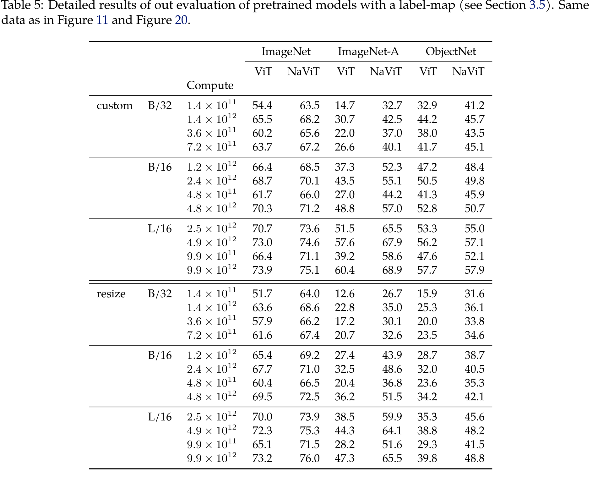
Table 5 — 原表完整数字暴露了 trade-off
最高 L/16、custom： ImageNet 73.9→75.1（+1.2 pp）；ImageNet-A 60.4→68.9（+8.5 pp、约 +14.1% 相对）；ObjectNet 57.7→57.9（+0.2 pp）。
最高 L/16、resize： ImageNet 73.2→76.0（+2.8 pp）；ImageNet-A 47.3→65.5（+18.2 pp、约 +38.5% 相对）；ObjectNet 39.8→48.8（+9.0 pp、约 +22.6% 相对）。不 crop 的比较差距更大；但 NaViT 自身的 ObjectNet resize 48.8 仍低于 custom 57.9，说明“完整保留所有像素”并非在所有评估协议下最好。
反例。 custom B/16 的 2.4×10¹² 行，ObjectNet 50.5→49.8，NaViT −0.7 pp；4.8×10¹² 行 52.8→50.7，−2.1 pp。完整原表不支持“所有模型、所有数据一律提升”。compute 列和 Table 2 存在近似但不完全相同的数值，本页按各表原数保留。
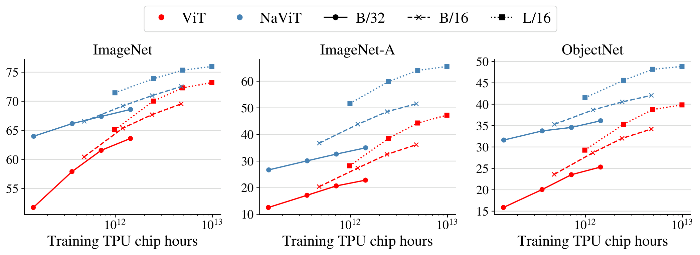
Source: Original NaViT v1 · author-provided figure PDFs; all panels, axes and legends retained. Click / Enter to zoom.
Figure 20 — 预处理是实验结论的一部分
与 Figure 11 相同的 checkpoint / label-map，改用纯 resize。ImageNet-A 和 ObjectNet 的 NaViT / ViT 差距变大。箭头的意义是“改变输入管线后，两种模型受到不同程度的损伤”，不能直接隔离为“packing 使 encoder 更 robust”。它提示部署时必须完整复制论文预处理；否则即使权重一致，也可能得到不同结论。
Appendix G — Fairness Signal Annotation
![Original Figure 21: Summary of results of evaluating the accuracy of annotators trained on fairness-related signals using either NaViT-L/16 or ViT-L/16. top: NaViT offers better representations that improve the accuracy of annotators. bottom: Using native aspect ratios in NaViT results in a higher performance when compared to resizing images to squares. be taken in such situations since classifiers can be inaccurate and lead to a broad categorization of people that misidentifies real identities. We encourage readers to delve into the comprehensive work outlining such potential risks, e.g. (Hamidi et al., 2018; Keyes, 2018), for further insight. In assessing the technical capabilities of NaViT, our intent is not to promote or encourage their application in inappropriate contexts. Rather, our objective is only to illuminate these technical findings for scenarios where they may be considered beneficial, such as when measuring the level of diversity in a dataset or auditing/mitigating biases in predictive models. We strongly advocate for responsible AI use, maintaining that the benefits of technological advancements should not overshadow the importance of user safety and privacy. AI tools, including ours, should always be deployed judiciously, with a keen awareness of potential risks and a commitment to avoiding harm.](assets/original/fig-21.png)
Source: Original NaViT v1 · author-provided figure PDFs; all panels, axes and legends retained. Click / Enter to zoom.
Figure 21 — 四个属性、两类比较、完整八 panel
上排依次为 CelebA gender、FairFace gender / age / ethnicity，NaViT 与 ViT frozen feature probe；下排为 crop 后 native aspect ratio 与 square resize。所有坐标、图例与 panel 保留。它扩充 Figure 12 的完整证据，而非新增一种 fairness metric。
原论文注明，预测类别可能粗化或错误识别真实身份，不能把这类 annotation 性能当成身份真实性。技术上还缺每组样本数、group-wise error、标注噪声与 downstream bias mitigation 的量化结果。此处强调的边界来自论文讨论与实验审计，不能将 aggregate accuracy 改善写成系统公平性已得到保证。
Appendix H — Model-vs-human OOD across resolutions
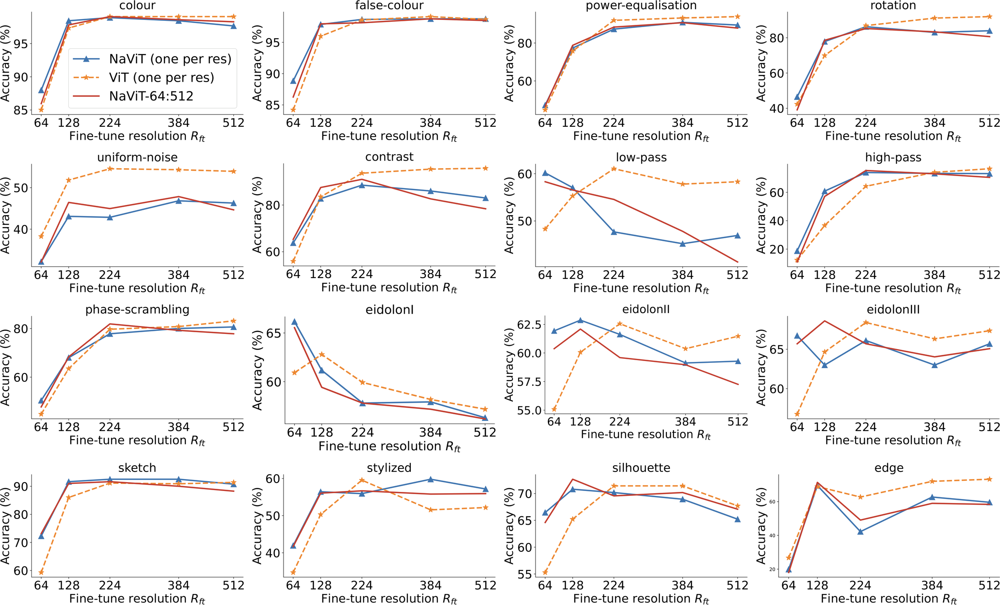
Source: Original NaViT v1 · author-provided figure PDFs; all panels, axes and legends retained. Click / Enter to zoom.
Figure 22 — 必须保留不利于 NaViT 的结果
16 个 panel 包括 colour、false colour、power equalisation、rotation、uniform noise、contrast、low/high-pass、phase scrambling、Eidolon I/II/III、sketch、stylized、silhouette、edge。model-vs-human 原 benchmark 含 17 个挑战数据集，此处排除没有客观类标签的 cue-conflict，因此画了 16 个，而不是遗漏一张。
测试图固定为 224×224 square；训练 / 微调后按各模型 resolution 变换，某些 corruption 难度过低或过高按 benchmark 规则排除。预训练 compute 对齐，微调 compute 和 data 一致。红色单个 mixed-resolution NaViT 大致接近蓝色多个 fixed-resolution NaViT，说明 flexibility；但橙色 ViT 在低 resolution 多数较弱，在高 resolution 多数更强。
Caveat 与 Interpretation。 square benchmark / square finetune 对 ViT 有一定匹配优势，但这是可能解释，不是可忽略反例的理由。该图限制了“NaViT 普遍 OOD 更强”的说法。未来应同时报告原始非方形 benchmark、square corruption benchmark、等图片数与等 compute，以区分 data exposure、geometry 和任务分布。
Interpretation — 技术演进、当前状态与工程判断
以下内容为独立扩展调研与本篇分析，不属于 2023 年 NaViT v1 的原始结果。
相关工作矩阵与带日期的技术路线
| 工作 / 日期 | 核心思想 | 优势 | 限制 | 与 NaViT 的关系 |
|---|---|---|---|---|
| ViT，2020-10 / ICLR 2021 | 固定 patch 把图像转序列 | 易缩放、统一 Transformer | 原训练管线多用 fixed square | NaViT 的 backbone 基础；站内精读 |
| FixRes，2019 | 纠正 train/test resolution 差异 | 可以高分辨率再适配 | 仍主要分阶段选择尺度 | NaViT 持续混合 scales，而非只在末段升分辨率 |
| Pix2Struct，2022-10 / ICML 2023 | 截图到 HTML 预训练、variable-resolution 输入 | 文档 / UI 的目标与几何有针对性 | 训练目标、模型和评估不同 | native aspect 的前序路线；不是 NaViT 的同任务 baseline |
| FlexiViT，2022-12 / CVPR 2023 | 单权重支持多 patch sizes，resize kernel | 可调 token 数和成本 | 需要 embedding kernel 适配 | 与 NaViT 的 per-image resolution 是互补调节轴 |
| NaViT，2023-07 / NeurIPS 2023 | Patch n’ Pack、逐图预算与隔离 | 固定 batch shape 下混合非方形图片 | 稠密 attention / 私有数据 / slot loss | 本文中心 |
| SigLIP 2 / NaFlex，2025-02 | 多目标训练；NaFlex 适配 native aspect 与 variable length | 官方权重、代码、文档检索证据 | NaFlex 未用完整 self-distillation / masked prediction recipe | 官方后续明确引用 NaViT；position 和 packing 细节不同 |
| Qwen3-VL，2025-11 | 基于 SigLIP-2 继续动态分辨率训练，结合 vision-language merger | 图像 / 视频与 LLM 一体应用 | token budget 同时影响 LLM 上下文和成本 | 体现动态分辨率在 VLM 中的实际延伸；不能归为原版 NaViT 的直接复现 |
| EUPE，2026-03 | 多 expert→proxy→小 encoder 蒸馏，末段 multi-resolution | 小模型多任务表征、端侧成本数据 | 能力融合与输入几何是不同问题 | 是端侧选型的互补路线，不提供原版 NaViT 的同协议排名 |
时间主线是 固定方形 ViT → 2022 Pix2Struct / FlexiViT 的两种灵活输入轴 → 2023 NaViT 的 fixed-container packing → 2025 NaFlex 的公开模型与文档任务 → 2025–2026 动态分辨率 VLM 与小模型多任务编码器。后两类并非都使用原版 factorized coordinates 或多图 packing；仅凭“native resolution”名称不能推定实现相同。
当前状态核验：截至 2026-10-29
“任意宽高比分辨率”没有单独一个全球排行榜。下面按公开权重、任务协议、模型规模与指标给出可比的局部证据，不宣称跨任务统一 SOTA。
External source：SigLIP 2 NaFlex 是最贴近原问题的公开后续。 论文 §2.4.2 / §3.1.1 用单个 checkpoint 支持 {128,256,576,784,1024} 训练 sequence lengths，并较好插值；原文明确说 extrapolation 不佳。相比 fixed-square variants，它在 TextCaps、HierText、SciCap、Screen2Words 等多数 OCR / 文档 / 截图 image-text retrieval 上更强，尤其小 token budgets；不能把 retrieval improvement 写成 OCR 字符准确率。
| 官方公开 checkpoint / 同为 sequence=256 | 参数规模 | ImageNet zero-shot ↑ | COCO text→image ↑ | COCO image→text ↑ |
|---|---|---|---|---|
| SigLIP 2 B/16 fixed 256 | 86M | 79.1 | 53.2 | 69.7 |
| SigLIP 2 NaFlex B/16 | 86M | 78.5 | 51.1 | 67.3 |
| SigLIP 2 NaFlex So400m/16 | 400M | 83.5 | 55.1 | 71.2 |
来源为 官方 checkpoint README，retrieval 为官方 COCO Recall@1 报告口径。B/16 fixed 与 NaFlex 分辨率预算相同，但 recipe 不完全相同；fixed 的 distillation / self-supervised 阶段有额外优势。NaFlex 支持更灵活输入，却没有在该 ImageNet / COCO 条件下无条件胜出。So400m 更大，不能用来声称 B/16 规模下提升。
External source：小型通用 encoder 的最新选型证据。 EUPE v2 Table 1 的 ViT-B、同一论文评估协议中，EUPE / SigLIP2 / DINOv3 的 ADE20k mIoU 为 52.4 / 41.6 / 51.8；TextVQA 为 50.4 / 51.6 / 42.7；NYUv2 误差为 0.391 / 0.512 / 0.373（↓）。不同任务的胜者不同，也说明多分辨率能力与语义 / dense / OCR 特征质量需要分开选择。这些是 EUPE 作者的对照实验，未包括原版 NaViT，不构成全局 leaderboard 结论。公开模型和代码由 Meta 官方 EUPE 仓库 提供。
External source：移动设备实测不能靠 FLOPs 推断。 EUPE Appendix B / Table 11 以 ExecuTorch 导出、iPhone 15 Pro CPU 测试：ViT-B（86M）256² 为 55.2 ms，512² 为 305.2 ms；ViT-S（21M）为 17.1 / 97.9 ms。这是特定 CPU、框架与论文模型的测量，不能移植为 HTP 延迟，也不包括本篇 VLM 全链路。本文算子计算显式规定乘加计 2 FLOPs，EUPE 表的 GFLOPs 口径不能未经核对直接混合。
官方 NaFlex 代码核对：与 2023 原版的区别
固定版本为 Big Vision commit 0127fb6b337ee2a27bf4e54dea79cff176527356；源码副本 与 预处理副本 供核查。
ops_naflex._get_image_size_for_seq搜索能够尽量填满 max sequence 的 H/W，向 patch 倍数取整，并至少保留一行一列。resize_to_sequence明确指出取整可造成小幅 aspect distortion，不是无限精确的几何保真。patchify返回 flattened pixels、y/x indices。encoder 以 Dense 做 patch projection，输入按(patches,ptype,yabs,xabs)解包。_pos_emb_resize用带 anti-alias 的 bilinear resize 适配 learned joint 2D table；这与原 NaViT 实验中的 factorized sum 不同。sa_mask由ptype==1生成有效 patch 的 pair mask；这里没有原版多图 example ID 的块隔离。输入按一张图片的 patch sequence 组织，不能直接把多图拼入这个实现后期待原 NaViT 的独立性。_pos_emb_resize默认每轴缓冲上限 64 patches，源码注明超过可能产生 NaN，可调该值；“支持任意分辨率”仍受实际 buffer / budget / 训练分布约束。
因此，这份代码是可运行的官方后续路线，不是声称已经找到了原论文完整训练 release。本次在当前 Scenic tree 未定位到独立 NaViT 目录，原文的 JFT 权重与完整实验配置没有在所检索一手资料中形成可复现实验包。
工程实现伪代码：先验证独立性，再优化吞吐
# Explanatory reconstruction; not copied from official NaViT source.
images = sample_effective_resolution_preserving_aspect(images)
patches, xy, image_id = patchify_with_original_coordinates(images)
patches, xy, image_id = per_image_token_drop(patches, xy, image_id)
packed, xy, image_id, valid = first_fit_pack(patches, xy, image_id, S)
z = linear_patch_embed(packed) + position_embed(xy, original_grid_shapes)
allow = valid[:, :, None] & valid[:, None, :]
allow &= image_id[:, :, None] == image_id[:, None, :]
z = encoder_with_safe_masked_rows(z, allow) # no NaN in pad queries
pooled, example_valid = masked_attention_pool(z, image_id, Emax)
loss = loss_on_valid_examples(pooled, labels, example_valid)
# Reduce global loss sum and global valid-example count before normalization.
对 VLM / OCR 的迁移。 图像编码器的 tokens 进入 projector / merger，再进入 LLM prefill。更高 resolution 不仅增加 encoder attention，若 merger 压缩比固定，还增加下游 LLM 上下文与 KV cache。不能只看 encoder 的 native aspect 优势就认定端到端更快；需一起计算 retained visual tokens、merger output tokens、LLM TTFT，以及 decode 阶段视觉上下文带来的 TPOT / memory pressure。NaViT 本身是双向图像 encoder，原文没有 autoregressive decoder KV-cache 优化。
对静态图编译 / HTP，可考虑有限 token buckets，保持 host 侧图片尺寸选择、坐标与 masks 一致，测量每个 bucket 的算子映射。应记录 resize / patchify / packing / H2D、projection、QK / softmax / AV、MLP、pooling / merger、LLM prefill，不能把 CPU fallback、buffer copy 或第二次 cascade callback 阻塞藏在总 FLOPs 下。
内存方面，本篇交互仅估计一份 attention map；真实物理峰值还包括 activations、临时 workspace、权重、RPC buffers 和编译 runtime。HTP 场景应结合 dma-buf / dmabuf_dump 与 CPU VmHWM 验证，不能把权重文件大小当整条链路峰值。量化时需在不同宽高比与 token buckets 的真实文档 / 场景上标定，追查 preprocessing、位置插值、mask、conversion / export 的误差传递。
Strengths、weaknesses 与尚未解决的问题
| 评价维度 | 判断与证据边界 |
|---|---|
| Novelty | 将 NLP packing 系统化移植到视觉，并把 resolution、dropping、pooling / loss slots 组合起来；贡献更偏训练系统与输入协议 |
| Correctness | 同图 masks 与逐图 pooling 可实现语义独立；全 masked rows、padding loss、图文配对须正确处理 |
| Experiment quality | 跨 scales、两类预训练、多个 downstream tasks 与大量消融；预算匹配与等图片数消融条件有区别 |
| Generalization | 跨 resolution 与 ImageNet-A 收益明确；model-vs-human 高 resolution 反例限制普遍 OOD Claim |
| Scalability | fixed B/S 有利编译与 accelerator batch；更长 S 的平方成本和 Emax 对比 loss 是隐藏代价 |
| Compute / memory | 更多便宜样本改善 budget-quality；mask 不自动省 FLOPs，显式 maps / 全局对比矩阵需专项优化 |
| Engineering | 逐 token backbone 改动少，数据、坐标、pooling、loss、分布式归一化、动态预算调度改动较多 |
| Hardware | 原文依赖 TPU / JAX 系统经验；端侧动态 shape 与 sparse attention 支持程度不同 |
| Reproducibility | 原 PDF / TeX / 图表公开；JFT 私有、单位问题、原版完整代码与权重可用性限制独立复现 |
最值得补充的实验：
- 等 exposure 消融： 同图数、同 retained tokens、同优化目标，分别切换 packing、aspect ratio、resolution diversity、dropping schedule。
- per-op 预算分解： dense mask 对 variable-length kernel，记录 FLOPs、HBM / SRAM IO、有效 tile 利用率、pad ratio、wall time 与峰值内存。
- OCR 几何实验： 固定字高、总面积、token budget，分别比较 square resize、center crop、native resize、tiles；报告字符 / 单词准确率与文档问答指标。
- 端侧链路实验： buckets / cascade / fixed resolution 在同精度门槛下比较 TTFT、TPOT、p50 / p95、thermal 与物理内存峰值。
- Budget 选择实验： confidence policy 在量化与 OOD 后的 risk-coverage；第二次 encoder 调用的 callback 生命周期与实际 amortization。
最终判断。 NaViT 让视觉输入预算从固定约束变成训练与部署可选择的变量。最容易迁移的启示是保留二维几何、显式追踪 example 身份、以全链路预算选择 tokens；最需要警惕的是把 packing 直接当稀疏计算，把更多训练图片的收益当每样本算法改进，或把 TPU 上的平均成本曲线当端侧延迟承诺。
References、原始资料与相关精读
Original paper。 NaViT v1 arXiv；PDF；TeX source；NeurIPS 2023 proceedings。本篇图表均以 v1 为准，会议 PDF 只核验 venue。
Related papers。 ViT；FixRes；Pix2Struct；FlexiViT；SigLIP（chunked contrastive / sigmoid discussion）；FlashAttention；SigLIP 2；Qwen3-VL；EUPE v2。
Official implementation。 Big Vision NaFlex encoder；NaFlex preprocessing；SigLIP 2 checkpoints；EUPE。
Preserved assets。 22 图清单与 SHA256；5 表全部 cells；原始表格视觉副本；解释流程 Mermaid；cascade Mermaid；Markdown 源稿；独立离线页面。

Related readings。 ViT：图像到序列 · Transformer：attention 基础 · FlashAttention：IO 与显式 attention map · Kimi K2.5：动态视觉输入与 VLM · Paper Readings。
Changelog。 2026-10-29：初次发布 v1 精读；保留 22 图、5 表与附录，说明 Figure 7 legend、Table 4 ECE、训练时间单位与 Figure 6 文件名的问题；扩展资料截止同日。